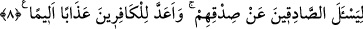

Meğer Allah ve Resûlü bize sadece kuru vaadlerde bulunmuşlar! diyorlardı.
13. Onlardan bir gurup da demişti ki: Ey Yesribliler (Medineliler)! Artık sizin için
durmanın sırası değil, haydi dönün! İçlerinden bir kısmı ise: Gerçekten evlerimiz
emniyette değil, diyerek Peygamber’den izin istiyordu; oysa evleri tehlikede
değildi, sadece kaçmayı arzuluyorlardı.
14. Medine’nin her yanından üzerlerine saldırılsaydı da, o zaman savaşmaları
istenseydi, şüphesiz hemen savaşa katılırlar ve evlerinde pek eğlenmezlerdi.
“Hani biz peygamberlerden söz almıştık;” Yâni, ey Muhammed bütün
peygamberlere risâlet sorumluluğunu yüklediğimiz sırada onlardan risâleti tebliğ ve hak
dine dâvet etme sözünü aldığımız vakti kavmine hatırlat veya sen de hatırla ve unutma.
Ey habibim, özellikle “senden” söz aldık. Hz. Peygamber (s.a.), değerini yüceltmek
ve O her ne kadar peygamberlerin en son gönderileni olsa da onların en fazîletlisi ve
yaratılışta ilki olduğunu hissettirmek için öne alınmış ve başta zikredilmiştir. Bir hadîste
şöyle buyrulmuştur: “Ben Âdem oğullarının efendisiyim. Bununla birlikte övünmek
yok.”[172] Yâni bunu övünmek için söylemiyorum.
Nebîlerin pîri ve tufandan sonra rasullerin ilki olan “Nûh’tan,” halîl “İbrâhim’den,”
kelîm “Mûsâ’dan,” rûhullah “Meryem oğlu Îsâ’dan da.” “Peygamberler”e dâhil
oldukları halde onların ayrıca özel olarak zikredilmesi, daha fazîlete sahip, şerîat sâhibi
peygamberlerin meşhurlarından ve rasullerden azim sâhibi olanların başta gelenleri
olduklarını bildirmek içindir.
“(Evet) biz onlardan” peygamberlerden, yüklendikleri risâletleri tebliğ etmeleri ve
emânetleri yerine ulaştırmaları konusunda “pek sağlam bir söz aldık.” İşte bu, (âyetin)
birinci mîsâkın/sözün ta kendisidir. Onun tekrar edilmesi, onun pek sağlam olduğu
vasfını açıklamak içindir.
8. Allah bu sözü doğruları doğruluklarıyla sorumlu kılmak (doğruluklarını
sormak) için aldı. Kâfirler için de çok acıklı bir azap hazırladı.
“Allah bu sözü doğruları doğruluklarıyla sorumlu kılmak (doğruluklarını sormak)
için aldı.”
Burada yeni bir hüküm ifâde edilmektedir. Âyet, söz almayı değil, peygamberlerden
mîsâk/söz alınmasının sebebini ve sonucunu beyan için getirilmiştir. Çünkü maksad
mîsâkın/sözün kendisini hatırlatmak, sonra da kasdî olarak onun gayesini beyan
etmektir. Nitekim gâib/üçüncü şahıs siygasına geçilmek sûretiyle üslûbun değiştirilmesi
bunu haber vermektedir.